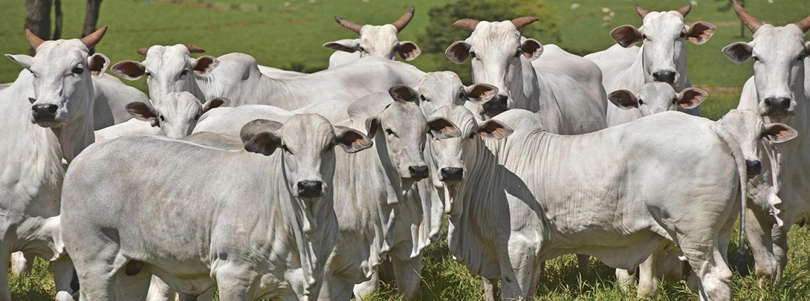

Aquí puedes encontrar las últimas noticias del Club Ganadero Porvenir.
El Club Ganadero "Porvenir" es una asociación comprometida con la promoción y desarrollo de la industria ganadera en nuestra comunidad. Nuestro club tiene sus raíces en la pasión por la ganadería y la visión de un futuro próspero para este sector vital de la economía.
Nuestra misión es fortalecer y fomentar la ganadería sostenible y responsable en la región. Trabajamos incansablemente para mejorar las prácticas ganaderas, promover la educación en el campo, y facilitar la colaboración entre ganaderos, veterinarios, y expertos en la industria para garantizar el bienestar animal y la producción de alimentos de alta calidad.
Nos vemos como un motor de cambio positivo en la ganadería local y regional. Esperamos un "Porvenir" donde la ganadería sea respetuosa con el medio ambiente, económicamente viable y socialmente responsable. Queremos ser un referente en la adopción de las mejores prácticas ganaderas y en la promoción de la tecnología y la innovación en el sector.
Número de miembros activos: 100
Número de cabezas de ganado: 500
